Los Viajes Extraordinarios
La colección completa de los Viajes Extraordinarios de Julio Verne, presentada en el orden original de publicación.
No se encontraron novelas con esa busqueda.
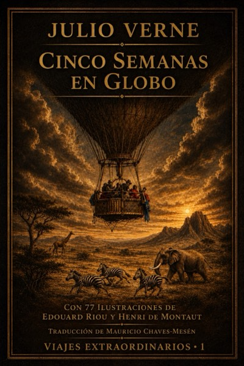
Cinco Semanas en Globo
El doctor Samuel Fergusson, su amigo Dick Kennedy y el fiel Joe emprenden una travesía aérea sobre África. A bordo del globo Victoria afrontarán territorios desconocidos, peligros naturales y encuentros inesperados mientras avanzan hacia el oeste.
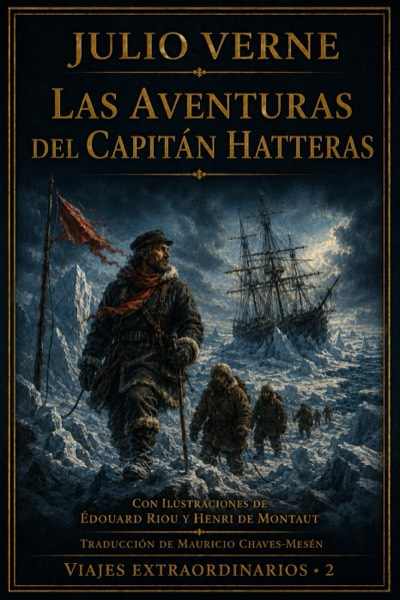
Las Aventuras del Capitán Hatteras
El capitán Hatteras conduce una expedición británica hacia el Polo Norte, impulsado por una voluntad inquebrantable. Entre hielos, aislamiento y tensiones crecientes, sus hombres deberán resistir los peligros de una región todavía desconocida.
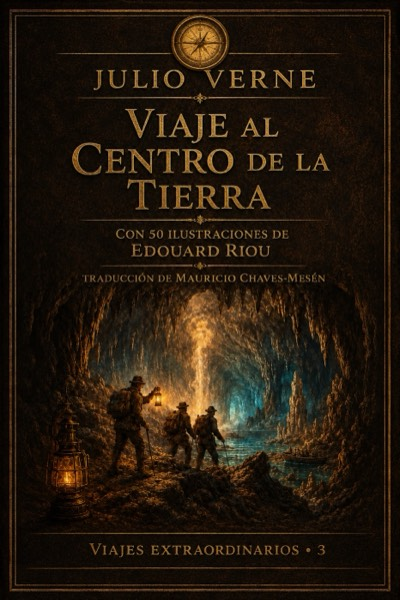
Viaje al Centro de la Tierra
El profesor Lidenbrock descifra un manuscrito que señala una ruta hacia el interior del planeta. Junto con Axel y el guía Hans, desciende por un volcán islandés hacia un mundo donde cada descubrimiento desafía la razón.
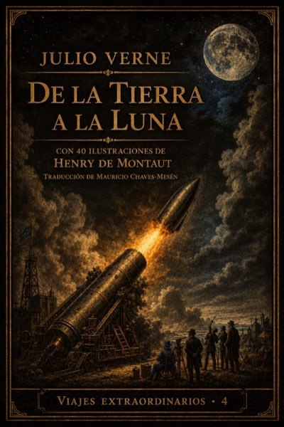
De la Tierra a la Luna
El Gun Club de Baltimore concibe un cañón capaz de enviar un proyectil a la Luna. Barbicane, Nicholl y el audaz Michel Ardan transforman el desafío científico en una empresa que cautiva al mundo entero.
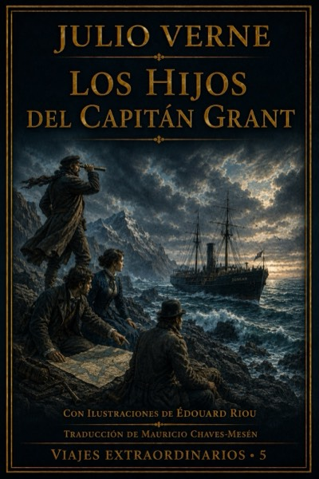
Los Hijos del Capitán Grant
Un mensaje hallado dentro de una botella impulsa a lord Glenarvan y a los hijos del capitán Grant a recorrer el paralelo 37. Su búsqueda atravesará continentes, océanos y culturas siguiendo pistas incompletas.
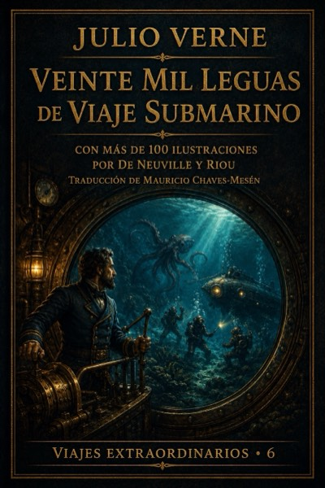
Veinte Mil Leguas de Viaje Submarino
El profesor Aronnax, Conseil y Ned Land son recibidos a bordo del Nautilus, extraordinario submarino gobernado por el capitán Nemo. Bajo los océanos descubrirán maravillas naturales y los secretos de un hombre apartado del mundo.
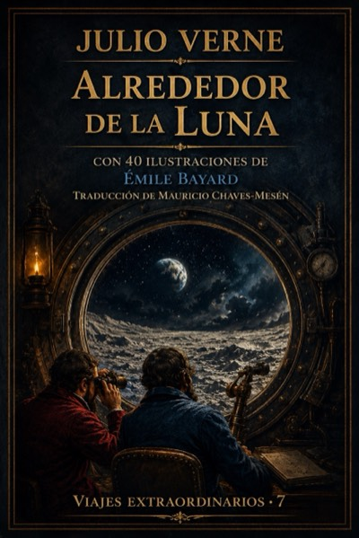
Alrededor de la Luna
Barbicane, Nicholl y Michel Ardan viajan dentro del proyectil lanzado desde Florida. Mientras se aproximan a la Luna, cada cálculo, observación y accidente pone a prueba su misión y transforma su viaje en una aventura cósmica.
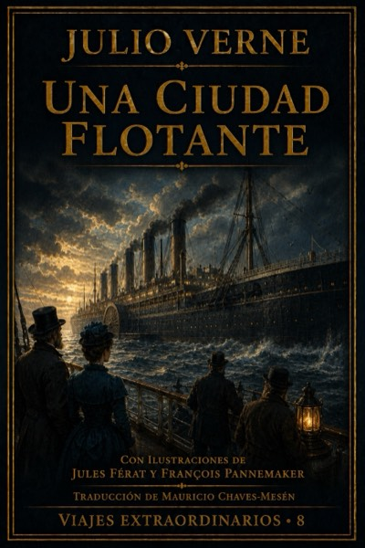
Una Ciudad Flotante
El gigantesco Great Eastern cruza el Atlántico convertido en una auténtica ciudad flotante. Entre la vida cotidiana del buque, tormentas y rivalidades personales, el narrador acompaña a unos viajeros marcados por un pasado compartido.
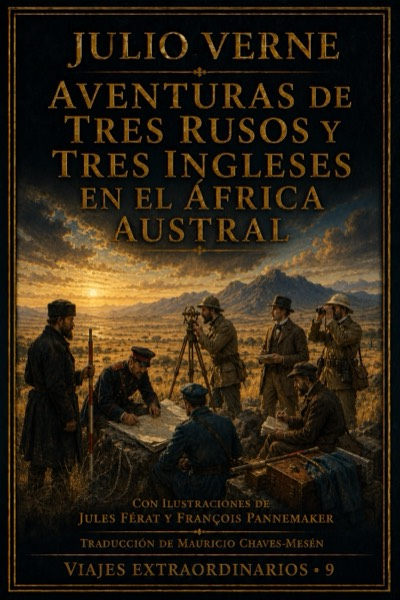
Aventuras de Tres Rusos y Tres Ingleses
Seis científicos viajan al África austral para medir con precisión un arco del meridiano. La expedición deberá conciliar rivalidades nacionales, dificultades técnicas, fauna peligrosa y vastas regiones inexploradas mientras persigue su ambicioso objetivo.
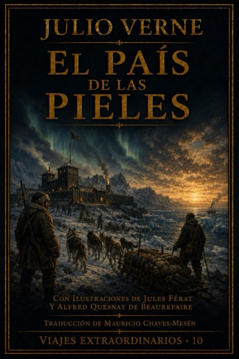
El País de las Pieles
El teniente Jasper Hobson dirige una expedición de la Compañía de la Bahía de Hudson hacia el extremo norte canadiense. Allí fundarán un remoto fuerte, rodeados por un paisaje ártico tan fascinante como imprevisible.
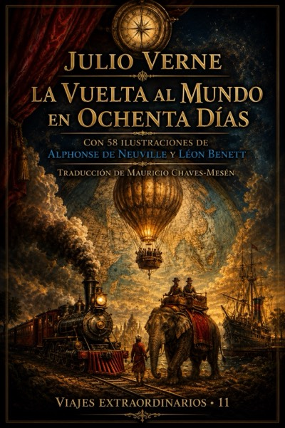
La Vuelta al Mundo en Ochenta Días
Phileas Fogg apuesta su fortuna a que puede circunnavegar el globo en ochenta días. Acompañado por Passepartout y seguido por el inspector Fix, emprende una carrera donde cada conexión, demora y encuentro resulta decisivo.
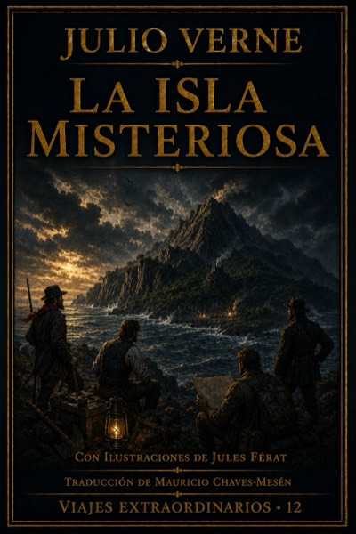
La Isla Misteriosa
Cinco fugitivos escapan en globo y llegan a una isla desconocida del Pacífico. Con ingenio, ciencia y trabajo colectivo construyen una nueva vida, mientras sucesos inexplicables sugieren que quizá no estén completamente solos.
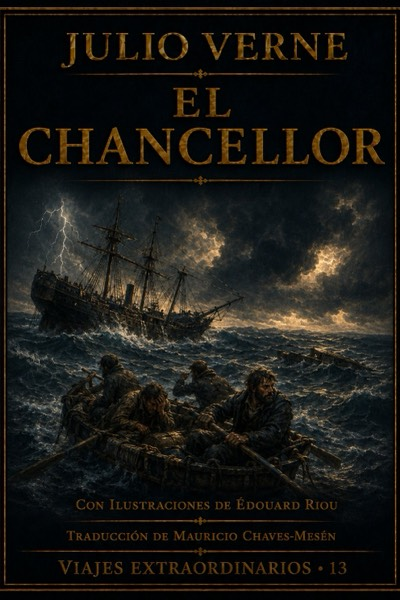
El Chancellor
El Chancellor parte de Charleston rumbo a Liverpool con pasajeros, tripulación y un cargamento inquietante. Narrado como un diario de viaje, el trayecto enfrenta a todos con peligros crecientes y decisiones que pondrán a prueba su humanidad.
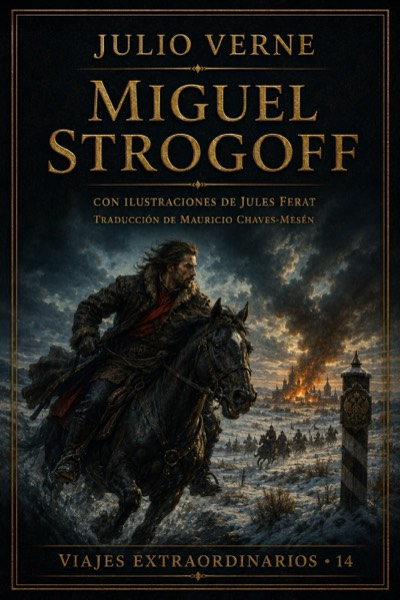
Miguel Strogoff
El correo del zar recibe una misión urgente: cruzar Siberia y llevar un mensaje vital hasta Irkutsk. Bajo una identidad secreta, Miguel Strogoff deberá atravesar territorios convulsos mientras protege su deber y a quienes encuentra.
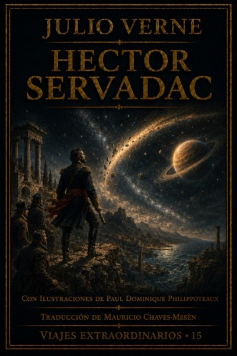
Hector Servadac
Un fenómeno astronómico arrastra al capitán Hector Servadac y a un variado grupo de supervivientes lejos de la Tierra. Unidos en un mundo alterado, deberán comprender su nueva situación y adaptarse a condiciones extraordinarias.
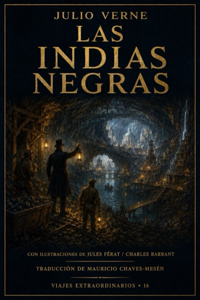
Las Indias Negras
El ingeniero James Starr regresa a las minas abandonadas de Aberfoyle tras recibir una misteriosa carta. Bajo tierra descubrirá una comunidad decidida a renacer, pero también señales inquietantes que amenazan sus planes.
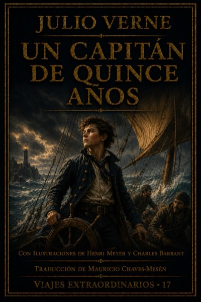
Un Capitán de Quince Años
Cuando una tragedia deja al Pilgrim sin mando, el joven Dick Sand asume responsabilidades inesperadas. Su valor y conocimientos serán puestos a prueba durante una navegación incierta, rodeado de pasajeros vulnerables y peligros ocultos.
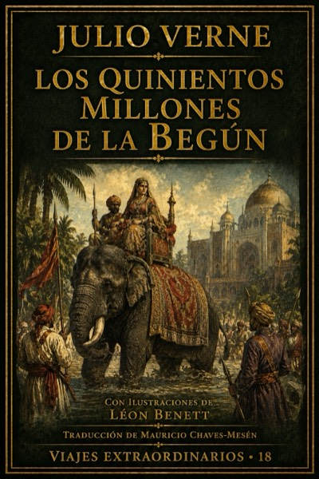
Los 500 Millones de la Begún
Dos herederos reciben fortunas inmensas y levantan ciudades inspiradas por ideales opuestos. Mientras una busca el bienestar y el conocimiento, la otra concentra poder y tecnología, convirtiendo su rivalidad en una amenaza creciente.
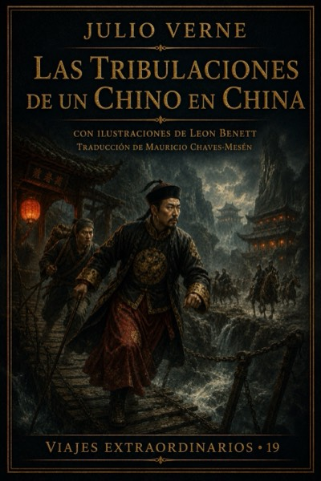
Las Tribulaciones de un Chino en China
Kin-Fo, un joven millonario incapaz de disfrutar su fortuna, toma una decisión extrema que pronto desea deshacer. Junto con su criado y un peculiar filósofo recorrerá China en una aventura vertiginosa y humorística.
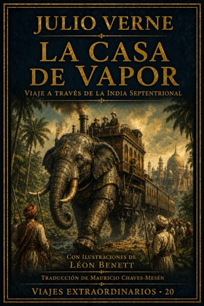
La Casa de Vapor
Un grupo de viajeros recorre la India en una extraordinaria casa rodante impulsada por vapor y guiada por un elefante mecánico. El viaje combina paisajes, historia y amenazas ligadas a una antigua rivalidad.
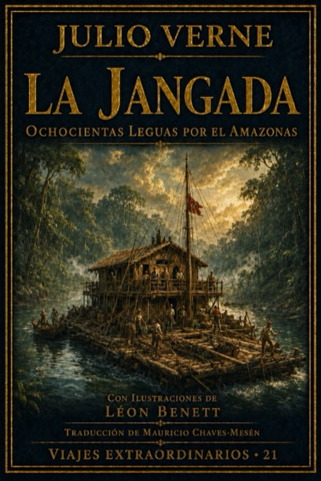
La Jangada
La familia Garral desciende el Amazonas sobre una inmensa jangada rumbo a Belém. El viaje revela la riqueza del gran río, mientras una acusación del pasado amenaza la tranquilidad y el honor familiar.
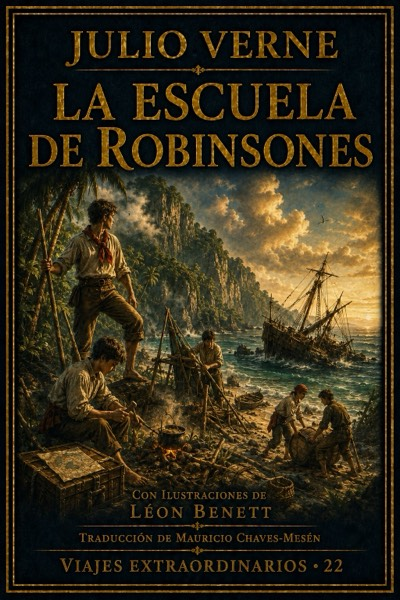
Escuela de Robinsones
Godfrey Morgan ansía vivir aventuras antes de casarse, y su tutor lo envía a una travesía que termina en naufragio. En una isla desierta deberá aplicar cuanto aprendió en los libros mientras la naturaleza y el instinto le dan lecciones imprevistas.
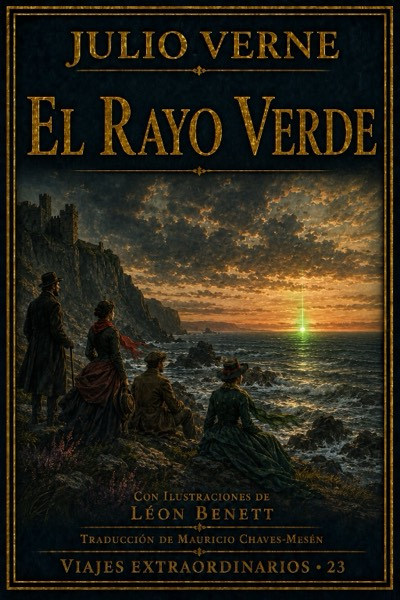
El Rayo Verde
La señorita Campbell espera presenciar el último rayo verde del sol poniente, fenómeno que según la leyenda revela el amor verdadero. Entre Escocia y las Hébridas, sus acompañantes conspiran para que el prodigio óptico la alcance de la manera más inesperada.
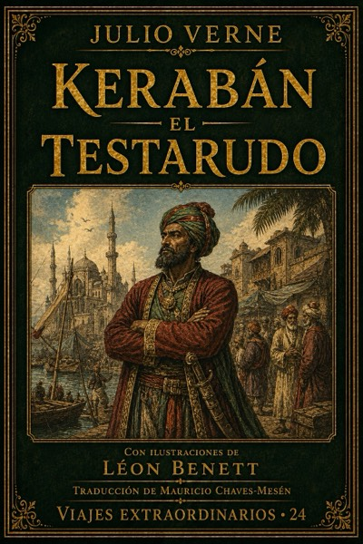
Keraban el Testarudo
El obstinado comerciante Keraban se niega a pagar un nuevo impuesto y decide rodear el mar Negro en lugar de cruzarlo. Su empecinado periplo lo lleva a atravesar paisajes, culturas y peligros que pondrán su tozudez a prueba.
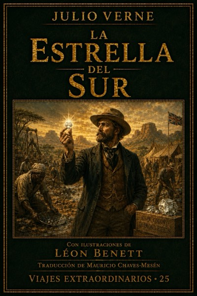
La Estrella del Sur
El ingeniero Cyprien Méré descubre un diamante fabuloso en las minas sudafricanas, pero la piedra desaparece. La búsqueda del ladrón entre colonos, indígenas y buscadores revela tensiones ocultas en una tierra donde la riqueza lo transforma todo.
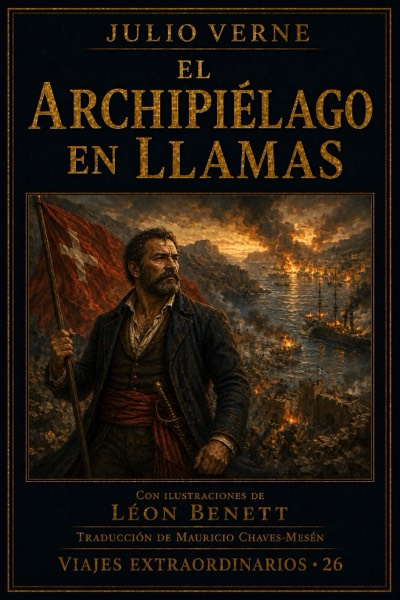
El Archipiélago en Llamas
En el mar Egeo durante la guerra de independencia griega, la tripulación de una nave mercante se ve envuelta en una red de traiciones y pasiones. Entre islas encendidas por el conflicto, una mujer marcada por el pasado decide su propio destino.
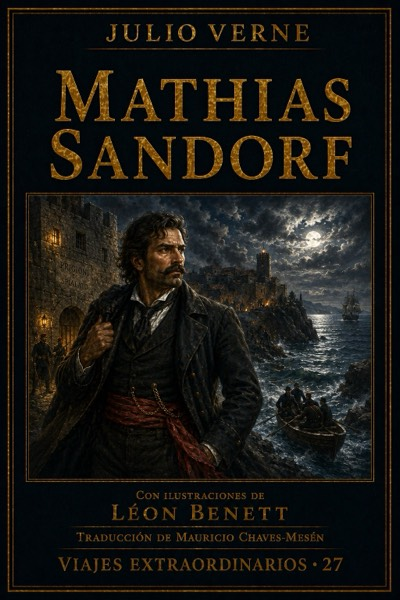
Mathias Sandorf
Un complot político separa a Mathias Sandorf de su familia y lo lleva a prisión. Tras escapar, adopta múltiples identidades para ejecutar un plan de venganza que cruza el Mediterráneo, inspirándose en el conde de Montecristo.
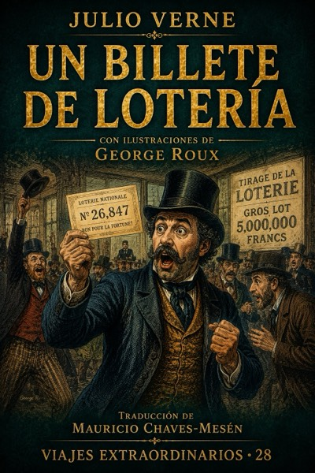
Billete de Lotería
Un billete de lotería extraviado desencadena una historia de espera y esperanza en un fiordo noruego. Mientras una joven aguarda noticias de su prometido perdido en el mar, el sorteo anual decide el rumbo de varias vidas entrelazadas.
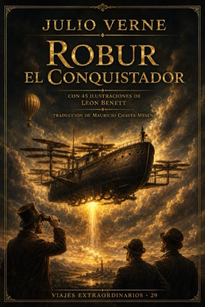
Robur el Conquistador
El enigmático Robur irrumpe en el Club de Navegación Aérea para demostrar la superioridad de su formidable máquina voladora, el Albatros. Unos huéspedes inesperados lo acompañarán en una asombrosa vuelta al mundo por los cielos.
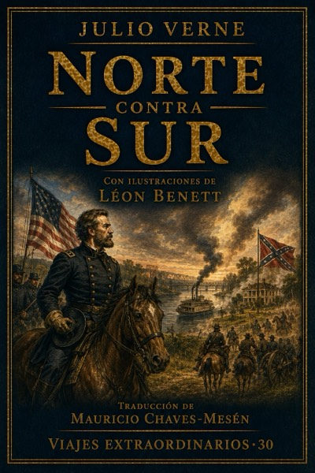
Norte contra Sur
En la Florida de la guerra de Secesión, el granjero James Burbank, unionista en tierra confederada, enfrenta la hostilidad de sus vecinos. Cuando su hija es secuestrada, estalla un conflicto donde las lealtades políticas se mezclan con rencores personales.
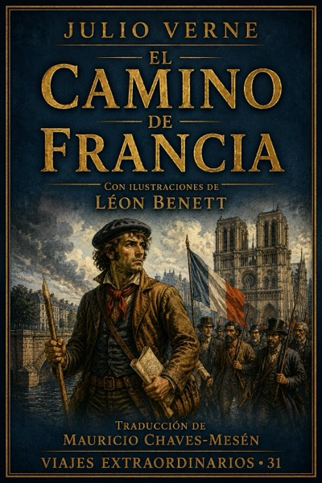
El Camino de Francia
Un soldado francés capturado en Prusia logra escapar y cruzar territorio enemigo para reunirse con su amada. Su travesía clandestina entre bosques, pueblos hostiles y un país en guerra es también un viaje hacia sus propias convicciones.
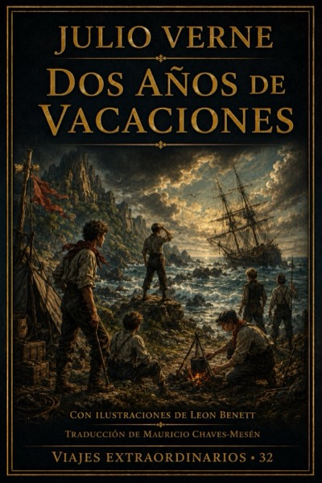
Dos Años de Vacaciones
Un grupo de colegiales queda a la deriva en el Pacífico y encalla en una isla desierta. Sin adultos que los guíen, deberán organizarse, superar diferencias y afrontar los encuentros que el mar lleve hasta ellos.
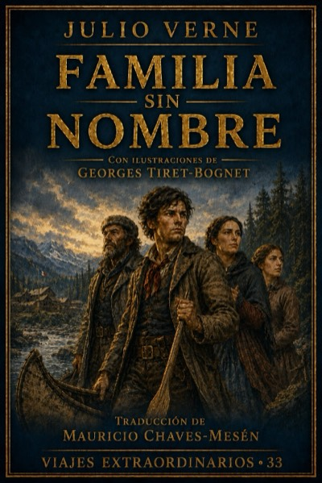
Familia sin Nombre
Durante la rebelión de los Patriotas en el Canadá francés, una familia oculta su verdadero apellido para luchar por la independencia. Entre persecuciones, lealtades divididas y un padre cuya identidad es un secreto, los hijos deberán elegir su bando.
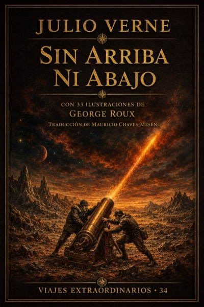
Sin Arriba ni Abajo
El presidente Barbicane anuncia la compra del Polo Norte. Pronto se descubre un propósito capaz de provocar pánico mundial, mientras gobiernos y científicos intentan comprender las consecuencias de otro proyecto monumental del Gun Club.
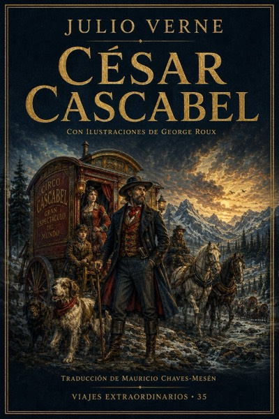
César Cascabel
La familia Cascabel, artistas ambulantes franceses, deciden regresar a Europa desde California atravesando Alaska y Siberia. Su caravana circense recorre paisajes extremos mientras sus habilidades de payasos y acróbatas los ayudan a sortear cada obstáculo.
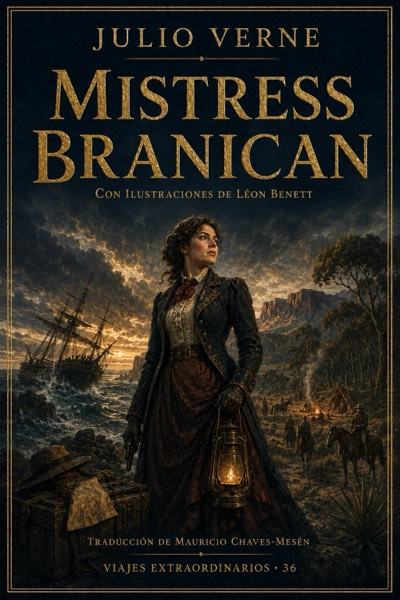
Mistress Branican
Tras la desaparición de su esposo en el mar, mistress Branican dirige ella misma las expediciones de búsqueda por los océanos. Su determinación la lleva a descubrir no solo el destino de su marido, sino también su propia fortaleza.
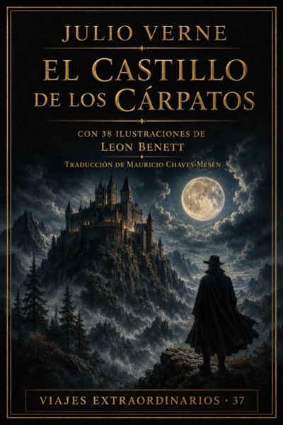
El Castillo de los Cárpatos
Extraños fenómenos rodean un castillo abandonado de Transilvania. Cuando el conde Franz de Télek llega a la región, los recuerdos de una cantante perdida y los prodigios de la ciencia convierten la fortaleza en un enigma.
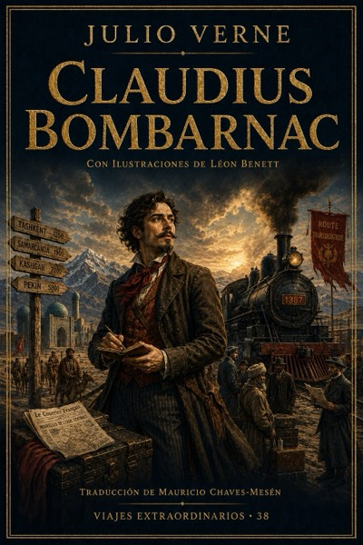
Claudius Bombarnac
Un reportero francés viaja en el tren Gran Transasiático desde el Caspio hasta Pekín. Su crónica del trayecto registra pasajeros excéntricos, paisajes fascinantes y sucesos imprevistos que convierten su reportaje en una aventura ferroviaria sin igual.
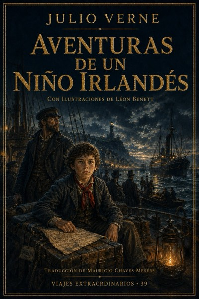
Aventuras de un Niño Irlandés
El pequeño huérfano Mick sobrevive en las calles de Dublín gracias a su ingenio y su voluntad inquebrantable. Desde la miseria más absoluta, su ascenso social es un conmovedor retrato de la infancia abandonada y la capacidad de reinventarse.
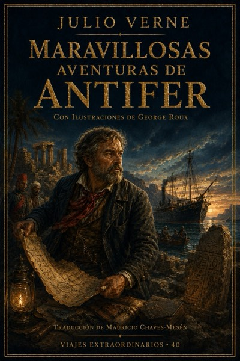
Maravillosas Aventuras de Antifer
El capitán Antifer hereda un enigma geográfico que lo guía hacia un tesoro oculto en distintos puntos del planeta. Su obsesión lo lleva de isla en isla, acompañado por un notario incrédulo, en una búsqueda que cruza tres continentes.
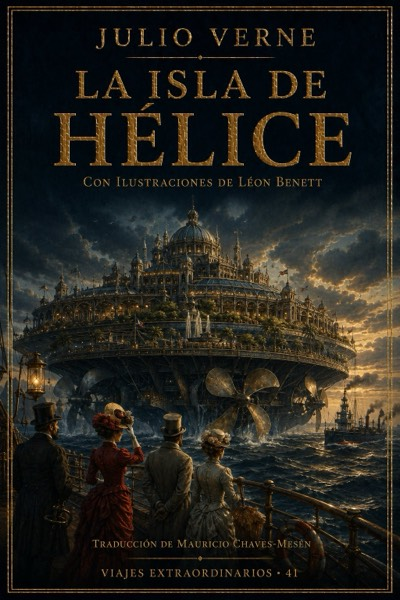
La Isla de Hélice
Una isla artificial impulsada por motores surca el Pacífico convertida en el hogar de los millonarios más excéntricos. Cuando un grupo de músicos franceses desembarca en ella, descubren un paraíso mecánico que oculta tensiones bajo su lujo flotante.
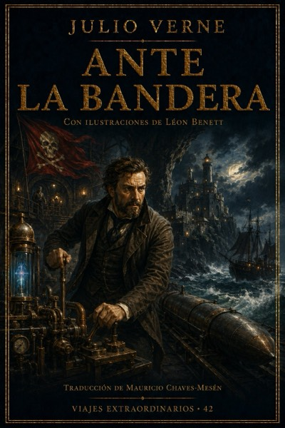
Ante la Bandera
El inventor Thomas Roch crea un explosivo de poder devastador, pero al caer en manos equivocadas su secreto amenaza la seguridad mundial. En una isla fortaleza donde se gesta una conspiración, un ingeniero deberá impedir la catástrofe.
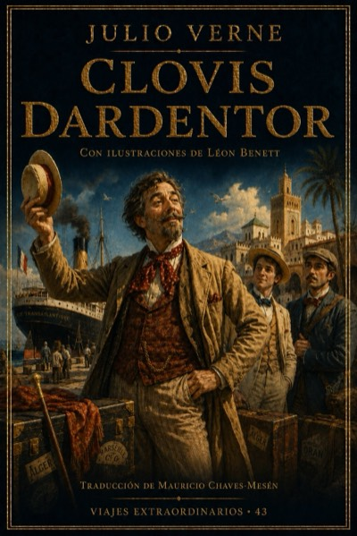
Clovis Dardentor
Un excéntrico filántropo ofrece financiar el viaje de dos jóvenes a cambio de que lo llamen «tío». La travesía por el Mediterráneo despliega encuentros, equívocos y peripecias donde la generosidad y el interés se mezclan de manera imprevisible.
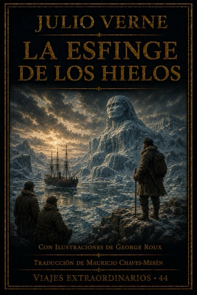
La Esfinge de los Hielos
El estadounidense Jeorling se une a una expedición ballenera en busca de respuestas sobre una desaparición ocurrida años atrás. En el Antártico, los hielos guardan un secreto que vincula su viaje con la leyenda del capitán Arthur Gordon Pym.
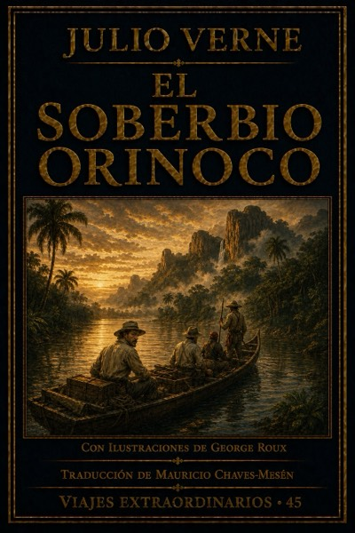
El Soberbio Orinoco
El sargento Martial y su sobrino remontan el río Orinoco en una expedición científica que pronto revela un propósito oculto. A orillas del gran río sudamericano, las identidades fingidas y los paisajes selváticos guardan una revelación familiar.
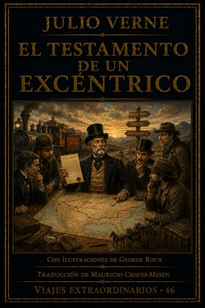
El Testamento de un Excéntrico
Un millonario excéntrico lega su fortuna a quien complete un recorrido por Estados Unidos siguiendo un tablero de juego viviente. Los participantes cruzan el país entero en una competición donde el azar, la estrategia y el carácter definen al ganador.
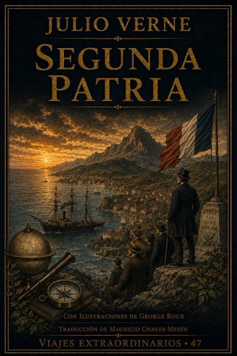
Segunda Patria
Tras años de abandono, la familia Zermatt regresa a la isla donde naufragaron y que convirtieron en su hogar. La nostalgia los lleva a reencontrarse con su paraíso perdido, pero nuevas amenazas pondrán a prueba su vínculo con esa tierra.
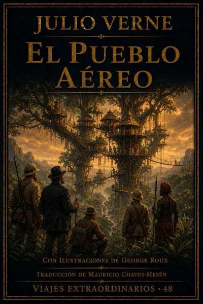
El Pueblo Aéreo
Un ingeniero y un cazador se internan en la selva africana y descubren una comunidad que habita en las copas de los árboles. Entre lianas, altura y costumbres desconocidas, deberán descifrar si ese pueblo aéreo es un refugio o una prisión.
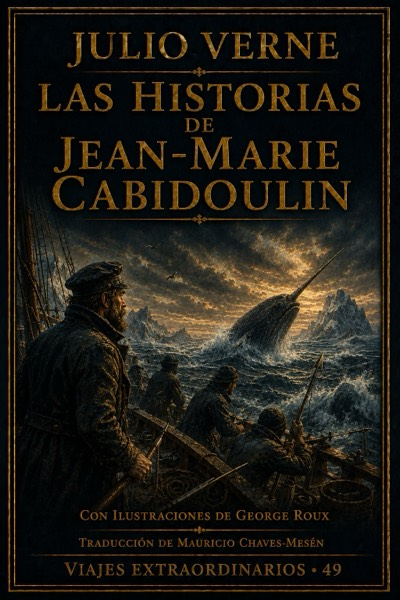
Las Historias de Jean-Marie Cabidoulin
El contramaestre Cabidoulin entretiene a la tripulación ballenera con historias de monstruos marinos, pero su obsesión por una serpiente gigante resulta profética. En alta mar, leyenda y realidad se encuentran cuando el temido encuentro se vuelve inevitable.

Los Hermanos Kip
Dos hermanos marineros son acusados injustamente del asesinato de su capitán en las islas del Pacífico. Mientras cumplen condena, la prueba de su inocencia viaja lentamente a través del océano, en una historia de lealtad fraternal y paciencia ante la adversidad.
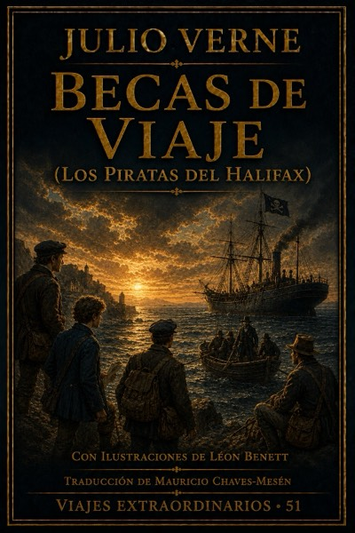
Becas de Viaje
Un grupo de estudiantes de una escuela de las Antillas gana un viaje educativo por las islas del Caribe. Lo que promete ser una travesía de aprendizaje se convierte en una pesadilla cuando el barco cae en manos de antiguos piratas.
Un Drama en Livonia
En la región báltica de Livonia, un banquero es asesinado y las sospechas recaen sobre un inocente. El abogado encargado del caso deberá desenredar una madeja de celos, intereses y tensiones étnicas antes de que la justicia condene al hombre equivocado.
Dueño del Mundo
Un vehículo capaz de viajar por tierra, mar y aire a velocidades prodigiosas desconcierta a las autoridades. Mientras el inventor del Terror mantiene en vilo a Estados Unidos, el inspector Strock sigue su rastro por montañas, lagos y cielos.
La Invasión del Mar
Un proyecto de ingeniería pretende inundar las depresiones del Sáhara argelino para crear un mar interior. Ingenieros, soldados y comunidades tuareg se enfrentan alrededor de una obra monumental sometida también a las fuerzas de la naturaleza.
Trilogía del Gun Club
Un solo volumen reúne las tres aventuras del Gun Club: el lanzamiento hacia la Luna, el viaje alrededor del satélite y un nuevo proyecto polar. Ciencia, audacia y sátira acompañan las empresas de Barbicane.
El Eterno Adán
En un futuro remoto, un sabio descubre un antiguo manuscrito que cuestiona la historia conocida. Sus páginas invitan a reflexionar sobre la memoria, el progreso y los ciclos que pueden determinar el destino de las civilizaciones.